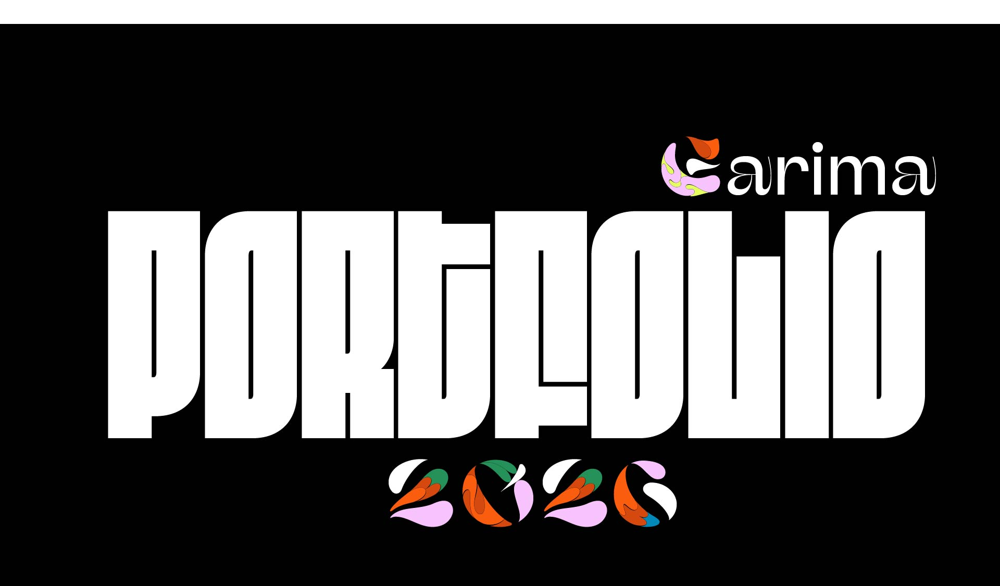

UX Designer & Visual Creator
Garima Shrestha
I design AI-powered digital experiences that turn complex workflows into clear, intuitive journeys — built on empathy, research, and thoughtful craft.

I design AI-powered digital experiences that turn complex workflows into clear, intuitive journeys — built on empathy, research, and thoughtful craft.
